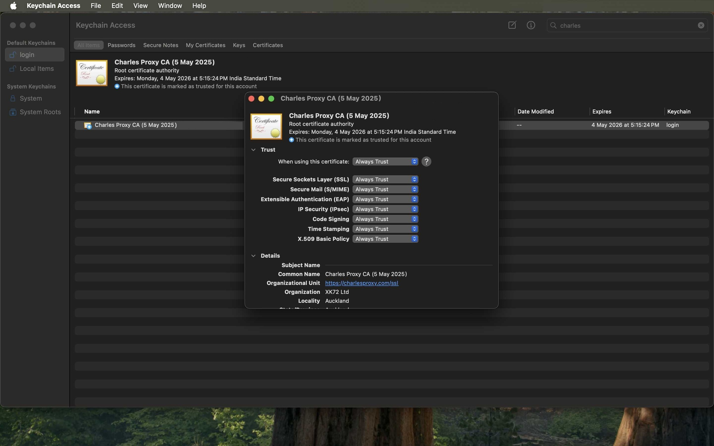

This is a complete guide to configuring Charles Proxy to monitor traffic from an iOS Simulator running on your Mac.
Part 1: Certificate Setup (The Foundation)
Goal: Get your Mac and the iOS Simulator to trust Charles. You must do both.
- Enable macOS Proxy: Before anything else, ensure Charles is allowed to capture traffic from your Mac. Go to Proxy > macOS Proxy and make sure it is checked.
- Install Certificate on macOS: Go to Help > SSL Proxying > Install Charles Root Certificate. This will open the macOS Keychain Access application.
- Trust Certificate on macOS: In Keychain Access, find the "Charles Proxy..." certificate, double-click it, expand the "Trust" section, and change "When using this certificate" to Always Trust. You will need to enter your system password to save this change. This is critical to prevent SSL handshake errors. 
- Install Certificate on iOS Simulator: Now, do the same for the simulator. Go to Help > SSL Proxying > Install Charles Root Certificate in iOS Simulators.
- Trust Certificate on iOS Simulator: Launch the simulator. Go to Settings > General > About > Certificate Trust Settings.

- Find the "Charles Proxy..." certificate and toggle the switch ON to enable full trust.
Part 2: Targeting Specific Traffic (The Fun Part)
Goal: Tell Charles exactly which web traffic you want to decrypt and record, which makes debugging much easier.
- Set SSL Proxying Location: To decrypt traffic, you must specify the domain. Go to Proxy > SSL Proxying Settings....
- Click Add and enter the host you want to inspect (e.g.,
api.example.com). To capture all subdomains, use a wildcard like*.google.com. Click OK. - Your location will now be added. Ensure the "Enable SSL Proxying" checkbox at the top is checked.
- Set Recording Location (Optional but Recommended): To avoid seeing ALL network traffic in Charles, you can specify which domains to record. Go to Proxy > Recording Settings....
- Select the Include tab and click Add.
- Add the same host you want to inspect (e.g.,
*.google.com). This tells Charles to only show traffic matching this pattern in its session list.
- With this setting, your Charles session will be clean and only contain traffic from the domains you specified, making debugging much easier.

You're all set! Now when you use your app in the simulator, only the targeted traffic will appear in Charles, and it will be decrypted so you can inspect the request and response bodies.